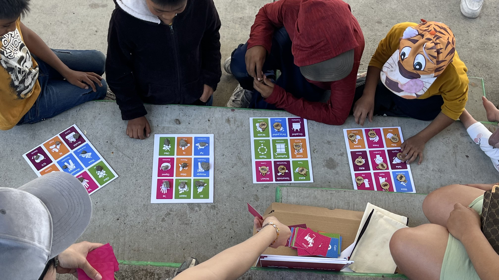

Galería de Evidencias
A continuación, se presentan imágenes de los talleres realizados con niñas, niños y adolescentes en el estado de Querétaro, así como con estudiantes universitarios en la UAM Cuajimalpa. Estas actividades formaron parte del proceso de evaluación de los materiales didácticos desarrollados para la enseñanza del Hñöhñö de manera lúdica e inclusiva.
